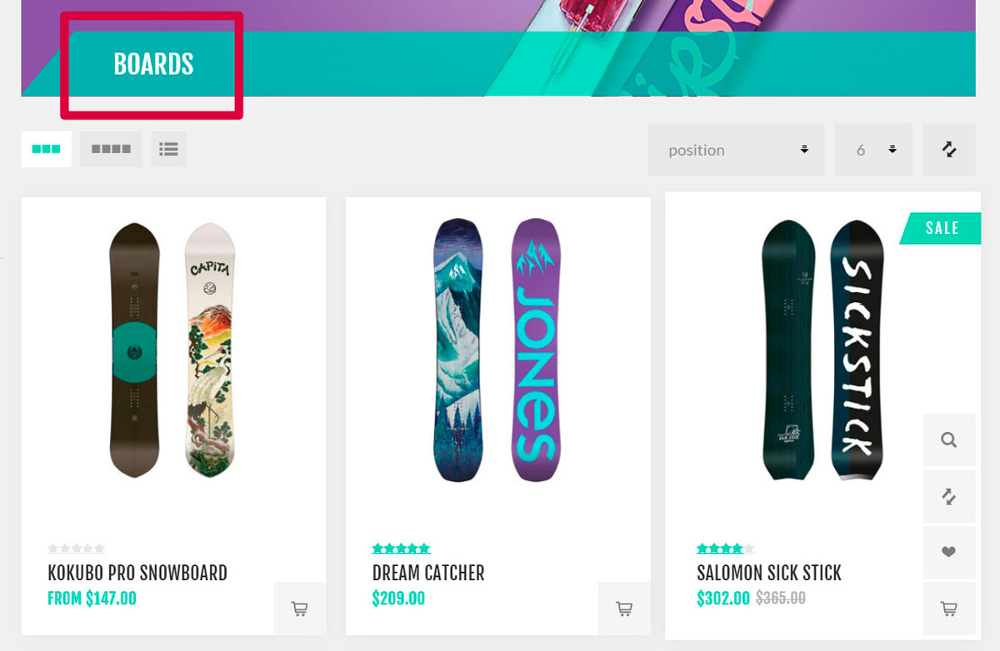
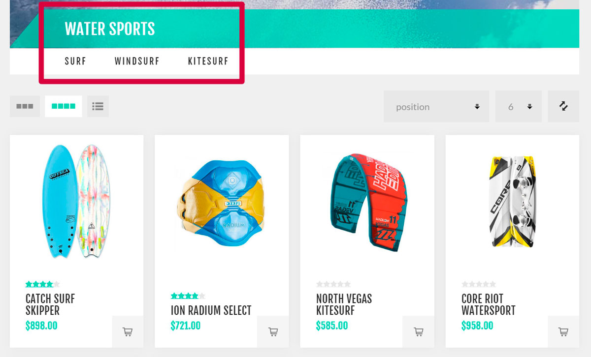
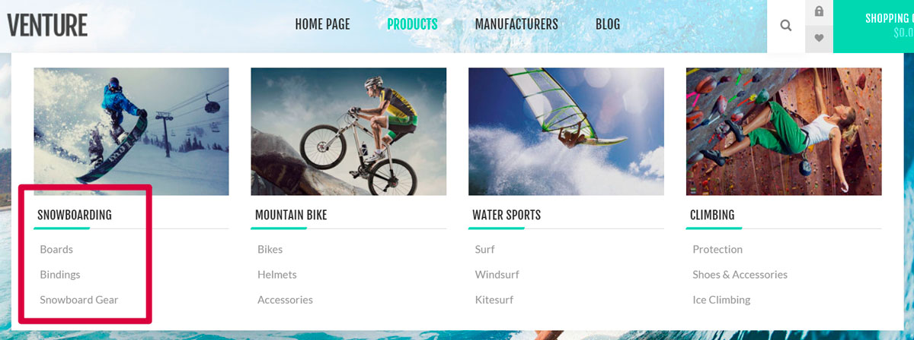
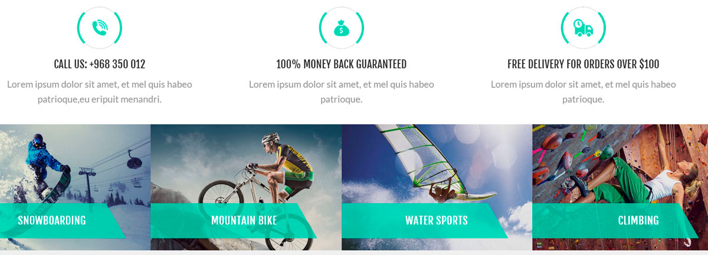
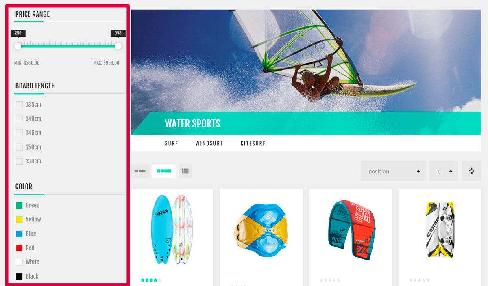
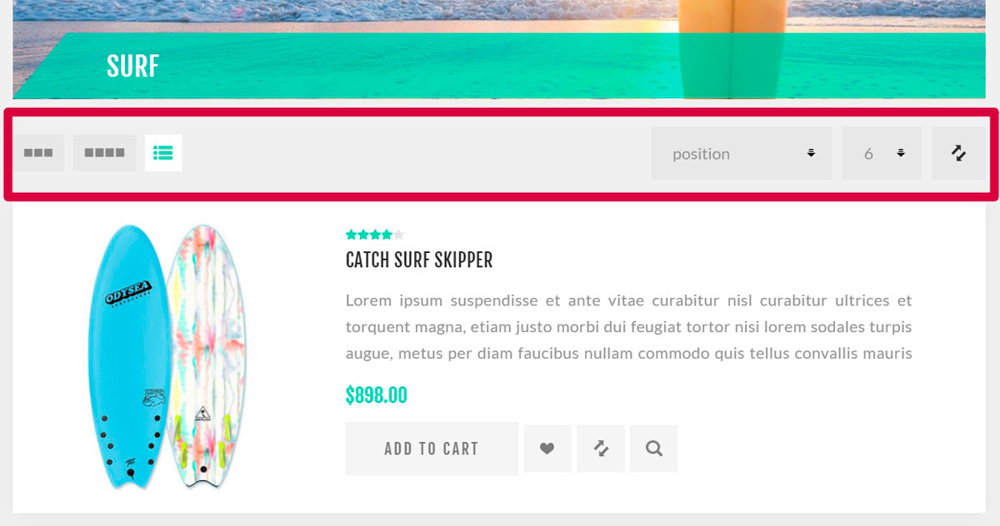

目錄
商品是網路商店的基礎，而商品管理是您商店管理策略中非常重要的一環。商品資訊有助於顧客決定是否要購買該商品。因此，請確保商店中擁有高品質的商品內容，因為這能建立顧客的信心，讓他們確信自己買到的正是所需且符合期待的商品。
nopCommerce 商品管理中最重要的組成部分包括：新增商品、管理製造商、設定商品分類以簡化導覽、加入良好的商品描述與吸引人的圖片、列出所有可能的商品變體，以及定義商品標籤以讓商品搜尋快速且有效。
以實際商店為例的目錄說明
在接下來的範例中，我們將使用以 Nop-Templates 所提供的「Nop Venture Theme」為基礎的示範商店。請在此處 https://www.nopcommerce.com/nop-venture-theme-14-plugins-nop-templatescom 了解更多關於此 第三方佈景主題 的資訊。
以下是一些秘訣，可協助您為顧客建立設計完善的目錄。
分類
當您為商店新增分類時，請確保它們能清楚描述所包含的商品（或子分類）。如下例所示，Boards（板類）分類僅包含板類商品：

請在 目錄 → 分類 頁面上使用 新增 按鈕來建立分類。當您需要將一般分類劃分為特定分類時，請使用子分類。這能讓顧客的搜尋過程更輕鬆。如下例所示，Water Sports（水上運動）分類包含了 Surf（衝浪）、Windsurf（風浪板）和 Kitesurf（風箏衝浪）子分類：

在分類編輯頁面上新增 父分類 (Parent category)，即可將其變為子分類。將最熱門的分類加入到每個頁面皆可見的頂部選單，以吸引更多顧客：

若要執行此操作，請使用分類編輯頁面上的 包含在頂部選單 (Include in top menu) 核取方塊。將最有趣的分類加入首頁。這些分類將會是顧客造訪您商店時第一眼看到的內容：

若要執行此操作，請使用分類編輯頁面上的 顯示於首頁 (Show on home page) 核取方塊。允許您的顧客使用篩選器在分類中進行搜尋：

篩選功能使用的是 規格屬性。允許您的顧客對商品進行排序並更改顯示模式：

關於排序的更多資訊，請造訪 目錄設定 - 商品排序 章節。使用分類編輯頁面上的 允許顧客選擇頁面大小 (Allow customers to select page size) 和 頁面大小選項 (Page size options) 欄位來設定顯示模式。
若要了解如何建立分類，請參閱 分類 章節。